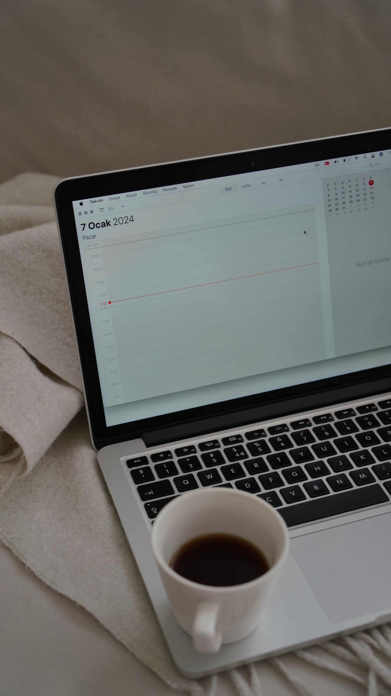

Pernah rapat online lewat Zoom lalu mendadak kepotong di menit ke-40? Semua peserta dikeluarkan, kamu buru-buru bikin tautan baru, dan suasana diskusi buyar. Banyak orang mengira satu-satunya solusi adalah langganan Zoom yang berbayar. Padahal ada jalan resmi yang gratis: Google Meet memberi waktu 60 menit untuk rapat beramai-ramai, cukup dengan akun Google yang kamu sudah punya. Artikel ini menunjukkan caranya, plus trik biar rapat panjang tetap jalan tanpa bayar.
Kenapa Zoom Gratis Selalu Berhenti di 40 Menit
Zoom paket Basic memang gratis dan bisa menampung sampai 100 peserta. Tapi aturannya tegas: hampir semua rapat yang dibuat akun gratis berhenti otomatis sesudah 40 menit, begitu ada peserta yang bergabung. Ini tertulis di halaman bantuan resmi Zoom, yang terakhir diperbarui 30 Oktober 2026.
Buat rapat singkat 40 menit memang cukup. Masalahnya muncul waktu agendanya panjang: rapat kerja mingguan, diskusi kelompok tugas, atau arisan online yang ngobrolnya ke mana-mana. Begitu kena batas, pilihannya cuma dua: bikin ulang tautan dan minta semua orang join lagi, atau langganan.
Langganan Zoom Pro dipatok 16,99 dolar AS per pengguna per bulan untuk tagihan bulanan, menurut daftar harga yang dicek pada Oktober dan November 2026. Buat tim kecil atau komunitas yang rapatnya seminggu sekali, angka itu terasa.
Yang jarang disadari: batas 40 menit itu aturan Zoom, bukan aturan baku industri. Platform lain punya aturan sendiri, dan salah satunya lebih longgar.
Google Meet Gratis Memberi 60 Menit untuk Rapat Beramai-ramai
Google Meet bisa dipakai gratis oleh siapa pun yang punya akun Google. Di deskripsi resmi aplikasinya di Google Play, yang diperbarui 15 Oktober 2026, Google menulis: panggilan video satu lawan satu bisa sampai 24 jam, dan kamu bisa mengadakan rapat sampai 60 menit dengan 100 orang tanpa biaya.
Artinya, untuk rapat berisi tiga orang atau lebih, kamu dapat 60 menit penuh. Itu 20 menit lebih lama dari Zoom gratis. Buat rapat satu lawan satu, malah nyaris tanpa batas: sampai 24 jam.
Batas 60 menit ini bukan promo sementara. Google menerapkannya sejak Juli 2021 dan aturan ini masih tercantum di deskripsi resmi aplikasinya.
Google memberi peringatan di menit ke-50 berupa bunyi dan pesan, supaya kamu sempat menutup agenda dengan rapi. Dan kabar baiknya, tautan rapat tidak kedaluwarsa. Begitu sesi 60 menit selesai, semua peserta bisa klik tautan yang sama dan langsung mulai 60 menit berikutnya.
Tamu pun tidak wajib install apa-apa. Mereka cukup klik tautan dan join dari browser, lalu menunggu diizinkan masuk oleh penyelenggara. Di HP memang lebih nyaman kalau install aplikasi Meet, tapi aplikasinya sendiri gratis.
Cara Bikin Rapat Google Meet 60 Menit dari HP atau Laptop
Kamu tidak perlu daftar layanan baru. Ikuti langkah ini:
- Buka meet.google.com di browser, lalu login dengan akun Google kamu.
- Klik tombol "Rapat baru". Pilih "Mulai rapat instan" kalau mau langsung jalan, atau "Buat rapat untuk nanti" kalau mau disiapkan dulu.
- Salin tautan rapat yang muncul, lalu kirim ke peserta lewat WhatsApp, Telegram, atau email.
- Peserta tinggal klik tautan itu. Dari laptop bisa langsung join di browser, dari HP disarankan buka lewat aplikasi Google Meet yang gratis.
- Susun agenda maksimal 50 menit. Begitu peringatan menit ke-50 muncul, tutup poin terakhir dengan rapi atau umumkan sesi lanjutan.
Seluruh prosesnya tidak sampai lima menit, dan tidak ada kolom kartu kredit di langkah mana pun.
Trik Rapat Panjang Tanpa Keluar Uang
Butuh rapat dua jam? Kamu tetap tidak harus bayar. Pecah saja jadi dua sesi 55 menit dengan jeda lima menit di tengahnya. Karena tautannya tidak kedaluwarsa, sesi kedua bisa memakai tautan yang sama. Jeda lima menit itu malah bagus buat istirahat dan isi ulang kopi.
Kalau diskusinya ternyata cuma butuh dua orang, pakai panggilan satu lawan satu. Batasnya 24 jam, jadi tidak akan kepotong di tengah pembicaraan serius.
Satu kebiasaan yang membantu: jadwalkan rapat lewat Google Calendar. Undangan kalender otomatis menyertakan tautan Meet, jadi peserta tidak perlu mencari-cari tautan di tumpukan chat. Simpan juga tautan rapat di catatan atau grup chat, supaya sesi lanjutan tidak perlu cari-cari lagi.

Batasan Jujur Paket Gratis Google Meet
Biar adil, ini batas yang perlu kamu tahu. Paket gratis memang berhenti di 60 menit untuk rapat beramai-ramai, dan yang membuat rapat wajib login dengan akun Google. Tamu dari luar tetap harus menunggu diizinkan masuk oleh penyelenggara.
Jadi kalau kebutuhanmu rutin di atas 60 menit dengan puluhan peserta, di situlah langganan berbayar masuk akal. Tapi buat rapat mingguan biasa, belajar kelompok, atau kumpul online keluarga, paket gratisnya sudah lebih dari cukup.
Penutup
Intinya, tidak perlu buru-buru langganan hanya karena rapat gratis kepotong di 40 menit. Per November 2026, Google Meet memberi 60 menit gratis yang resmi untuk rapat beramai-ramai, plus panggilan satu lawan satu sampai 24 jam. Selisih 20 menit dari Zoom gratis sering kali justru jadi pembeda antara rapat yang kepotong dan rapat yang selesai. Kalau suatu hari Google mengubah batasnya, yang berubah cuma angkanya, caranya tetap sama.
Sumber dan Info Resmi
Fakta dan detail di artikel ini merujuk ke sumber berikut, yang sudah dicek silang isinya:
- Zoom Help Center (support.zoom.com), artikel bantuan KB0067966 yang diperbarui 30 Oktober 2026: rapat yang dibuat akun Basic berhenti otomatis sesudah 40 menit.
- Google Play, deskripsi resmi aplikasi Google Meet yang diperbarui 15 Oktober 2026: panggilan video satu lawan satu sampai 24 jam, rapat sampai 60 menit dengan 100 orang tanpa biaya.
- MeetGeek (meetgeek.ai), panduan batas waktu Google Meet: rapat grup tiga peserta atau lebih 60 menit, peringatan di menit ke-50, tautan rapat tidak kedaluwarsa; panduan harga Zoom yang dibaca 2 Oktober 2026: Zoom Pro 16,99 dolar AS per bulan untuk tagihan bulanan.
- Forum komunitas Google Meet (support.google.com): utas bantuan yang mengutip aturan resmi batas waktu rapat.
- Recurdash (recurdash.com), daftar harga langganan Zoom yang diverifikasi 2 November 2026: Zoom Pro 16,99 dolar AS per bulan.
- Viprow (viprow.co.uk), panduan memakai Google Meet 2026: tamu bisa join dari browser tanpa akun, pembuat rapat wajib login akun Google.
- UMA Technology (umatechnology.org): batas 60 menit rapat Google Meet untuk pengguna Gmail gratis berlaku sejak 1 Juli 2021.